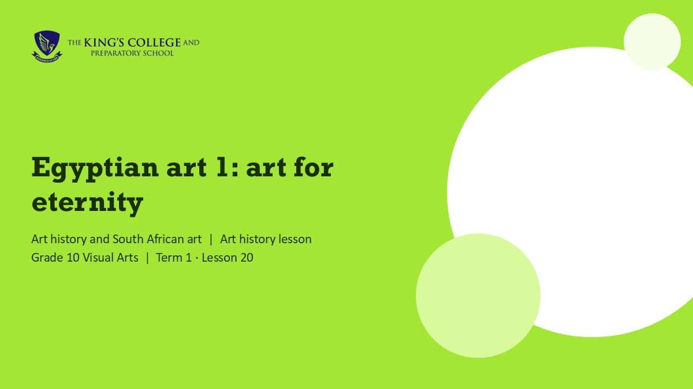

Term 1 · Lesson 20 · Art history lesson
Egyptian art 1: art for eternity
Start here
Today I will
- Explain how belief in the afterlife shaped Egyptian art
- Recognise the composite view, hierarchical scale and the canon of proportion
- Label the conventions in a tomb painting
Try to stand like a figure in an Egyptian painting. Why does it feel so uncomfortable?
Words to know
- Afterlife
- Life after death, which Egyptians believed continued forever.
- Pharaoh
- The king of Egypt, believed to be a god on earth.
- Composite view
- Showing parts of a figure from their most recognisable angles in one image.
- Hierarchical scale
- Showing importance by size: the most important figure is the biggest.
- Canon of proportion
- A fixed set of rules for the measurements of the human figure, often based on a grid.
- Register
- A horizontal band in which figures or scenes are arranged.
Slides

Notes
Belief in the afterlife and the role of the pharaoh; the conventions of Egyptian figure drawing (composite view, hierarchical scale, canon of proportion).
Art for eternity
- The afterlife: Egyptians believed life continued after death; tomb art gave the spirit (the ka) a home and things to enjoy.
- The pharaoh: Believed to be a god on earth; art showed him strong, young and calm, never old or emotional.
- Built to last: Because art had to work forever, it followed strict rules and changed very little over 3 000 years.
- The artists: Skilled, mostly anonymous craftsmen in workshops, serving the pharaoh and the priests.
Three conventions of figure drawing
| Convention | What it looks like |
|---|---|
| Composite view | Head and legs in profile; eye and shoulders from the front, so each part is shown clearly. |
| Hierarchical scale | The pharaoh or tomb owner is the biggest; servants and family are smaller. |
| Canon of proportion | Figures drawn on a grid of about 18 squares from feet to hairline, so every figure looks 'correct'. |
| Registers | Scenes arranged in horizontal bands with ground lines, read like a strip. |
Egyptian art shows what is true and lasting, not what the eye sees in a moment.
The Teacher says God has set eternity in the human heart. Egyptians built for eternity in stone. What do people today put their hope in for the long term?
Practical
You need: History booklet, visual journal
Find the conventions
- Write the facts: tomb painting of Nebamun hunting in the marshes, c. 1350 BCE, paint on plaster, British Museum.
- Label the composite view on the main figure: head, eye, shoulders, legs.
- Label where hierarchical scale is used and who is smallest.
- Find and label one register or ground line.
- On your own: write one FET formula sentence about scale and one about line.
- Interpret: explain why a hunting scene was painted in a tomb.
Test yourself
- Explain the composite view in Egyptian figure painting.
- Why is the pharaoh or tomb owner the largest figure?
- Explain how belief in the afterlife influenced Egyptian art.
Show answers
1. The head and legs are in profile while the eye and shoulders face the front, showing each part at its clearest angle. 2. Hierarchical scale: size shows importance. 3. Art had to last forever and serve the spirit, so it used durable materials, strict rules and scenes the dead person could enjoy.
Finished early?
Use the Egyptian conventions to draw a figure of your own.
- Rule a column of 18 small squares in your VJ, from feet to hairline.
- Draw a simple, clothed figure on the grid in composite view: head and legs in profile, eye and shoulders from the front.
- Add a much smaller second figure beside it to show hierarchical scale.
- Label the composite view, the canon grid and the hierarchical scale.